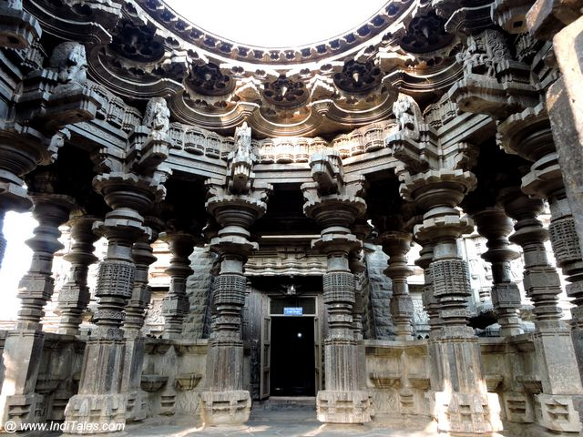
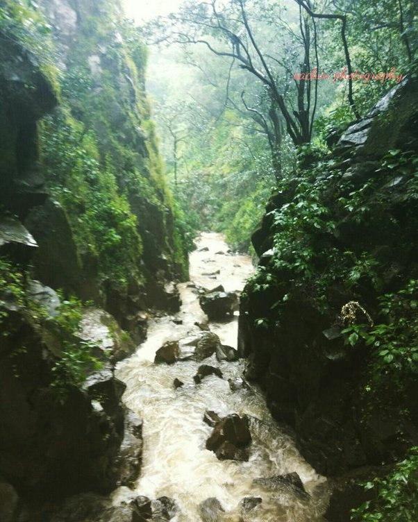
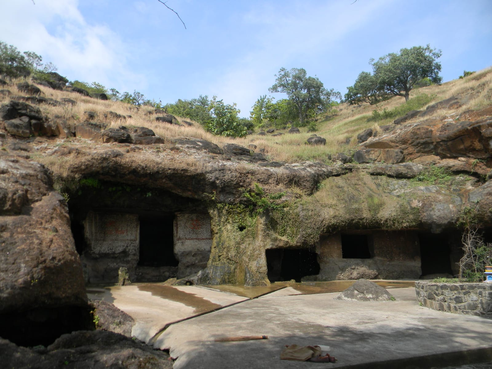
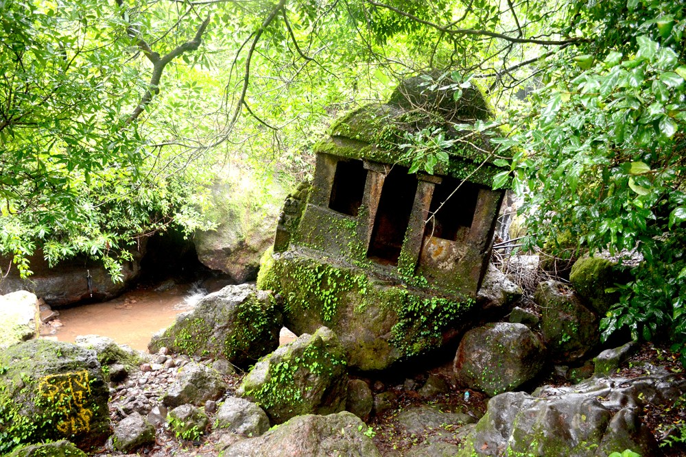

Pavangadh |
Panhala and Pavangad were taken by rebels who seized Colonel Ovans, the Resident of Satara, when he was on tour and imprisoned him in Panhala. A British force under General Delamotte was sent against the rebels and on 1 December 1844 breached Panhala fort walls, took it by storm. Shortly thereafter in 1844, the two main entrances of Pawangad were pulled down and the fort was dismantled. The fort though deserted has a good water supply.
Pavangadh
|
Khidrapur |
Kopeshwar Temple is at Khidrapur, Kolhapur district, Maharashtra. It is at the border of Maharashtra and Karnataka. It is also accessible from Sangli as well. It was built in the 12th century by Shilahara king Gandaraditya between 1109 and 1178 CE. It is to the east of Kolhapur, ancient & artistic on the bank of the Krishna river. Even though Silaharas were Jain kings, they built and renovated various Hindu temples, thus depicting their respect and love for all religions. Kopeshwar means angry Shiva .
Khidrapur
|
Pawankhind |
Battle of Pävankhind was a rearguard last stand that took place on 13 July 1660 at a mountain pass in the vicinity of fort Vishalgad, near the city of Kolhapur, Maharashtra, India between the Maratha Warrior Baji Prabhu Deshpande and Siddi Masud of Adilshah Sultanate.[1][2] The engagement ending with the destruction of the Maratha forces, and a tactical victory for the Bijapur Sultanate, but failing to achieve a strategic victory.
Pawankhind
|
Pohale Cave |
Pohale Pandav Leni Caves is a Buddhist Archaeological Site.These caves carved in laterite rock, which are of Buddhist origin, locally called as ‘Pandavleni’. ‘Leni’ is a Marathi word meaning ‘cave’.
There are two main caves; one of them is supported to have been the school and other the chapel or Chaitya. There are two rock-cut water cisterns and still in use.
These caves are carved in five sections in a half round shape and a well decorated roof (Plate 1). In the middle of two rooms, there is a seat, 12 feet high; Shivalinga and Nandi are placed recently in the innermost room, which is locally known as ‘Aundhaya Nagnath'(Plate 2).
Pohale Cave
|
Palasambe |
Palsambe Gaganbawda | Palsambe | Ramling Palsambe | Palsambe kolhapur Hello friends, today we are going to see Pandava Leni which is a monolith temple built on a stone. These caves are in the forest at Palsambe. Palsambe is at a distance of 50 km from Kolhapur. This place is about 5 kilometers inside. On the side of the road you will see the board . Let’s see then Pandav Leni. Now we have reached near the temple. There is a lot of parking space here. This place is always full of tourists, you can come here in any season, in front of you while descending.The monolithic temple looks like a single stone templeThey are called a stone monlith temple
Palasambe
|